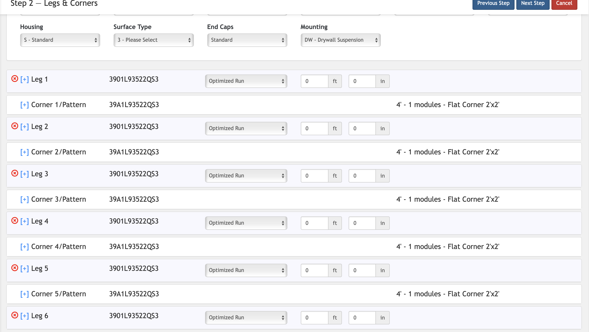
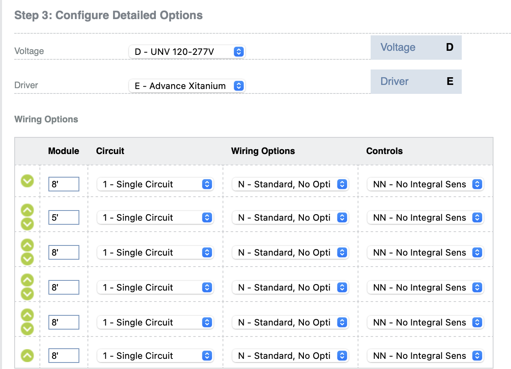

I completed a 12-month internship at Signify and have been working part-time with the company for an additional six-months. During my time at Signify, my team and I focused on developing and releasing a new version of LightXpress, a website that enables customers to configure Ledalite products.
The primary objective for the new website was the integration of a 3D Visual Configurator, a new feature which was a revolutionary change compared to the previous text-based configuration methods. I was entrusted with the architecture and implementation of this 3D Configurator, a critical and complex project. This opportunity allowed me to enhance my technical skills and grow as a Software Developer, making it a valuable professional experience.
In the previous version of LightXpress, fixture patterns of products were difficult to configure and it was hard to map out text-based representations of fixtures into how they would visually appear which caused misunderstanding and confusion. Below is an example of a pattern being configured in the previous version of LightXpress. It's evidently difficult to map out how this would look visually.
Below is a demo illustrating 3D Configurator in action. It allows user to visually see how their end-product would appear visually and see their changes in real-time as they configure patterns of fixtures. This tool gives users the confidence to create complex patterns according to their needs while also being user-friendly.
The development of the 3D Configurator was a challenging yet highly rewarding project that provided me with the opportunity to learn and apply new tools such as Three.js, React-Three-Fiber, and React-Three-Drei. I was responsible for architecting the 3D Configurator and made key design decisions involving data structures, classes, and algorithms necessary for implementation of this feature.
Throughout the project, I adopted a systematic approach by documenting my design ideas during each sprint and presenting them to the team for feedback. This collaborative process not only ensured alignment within the team but also minimized unexpected bugs during the implementation phase.
One of the most fulfilling aspects of this project was designing all the complex algorithms which the configurator runs on as these were challenging and really made me think critically.
In the previous version of LightXpress, users would need to apply module-specific configurations to modules in a fixture one at a time. This was an inefficient process which could be optimized. Below is the previous version of module-specific configurations in old LightXpress
The Module Configurator allows user to apply module-specific configurations to multiple modules in a fixture simultaneously with a visual user interface allowing them to visually see configuration changes in real-time and also includes useful options such as 'Select All', 'Select Unselected', and 'Clear Selected'.
Additionally, the Module Configurator serves as a supporting tool for the 3D Configurator and resolve ambiguities such as when user has multiple variations of a fixture to choose from and assists them in selecting desired variation in a simple visual manner.
Working at Signify Ledalite has been a great experience and I am grateful for the opportunity to work with a team of passionate individuals all working towards a common goal of the completion of LightXpress 5. I'm also grateful for the opportunity to work on meaningful projects which have a real impact on the customers. Signify has been a key part of my journey as a Software Developer and has helped me gain valuable exposure in my field.